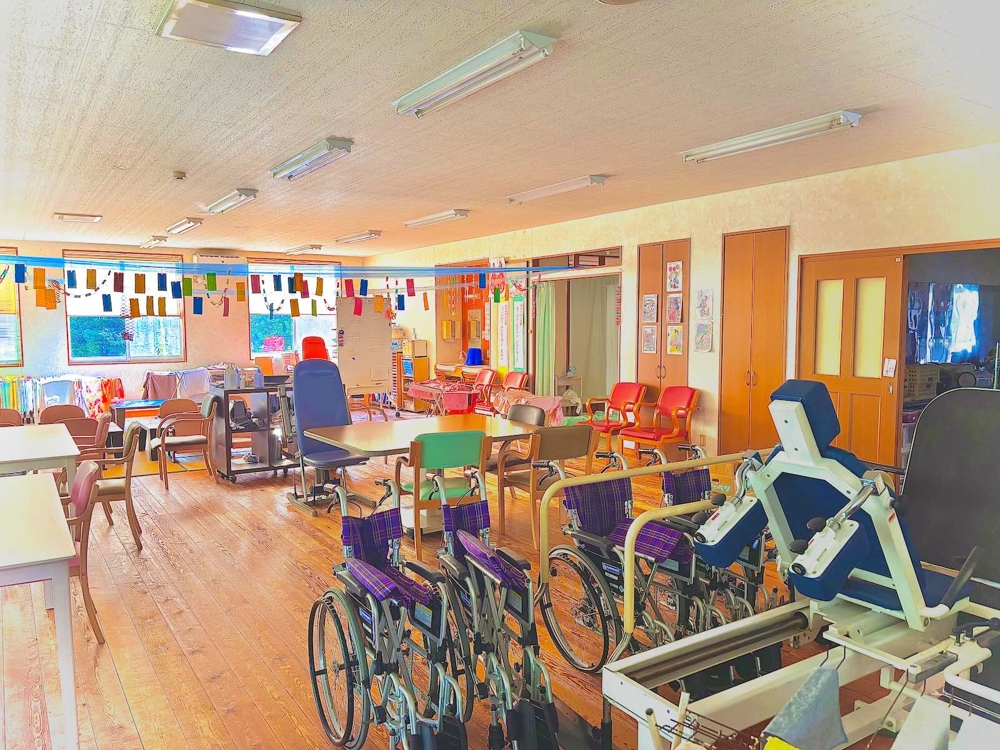

ケアセンターソレイユあざぶ
ケアセンターソレイユあざぶ
ご利用者様とご家族様に寄り添うデイサービス
ご利用者様とご家族様に寄り添うデイサービス
ケアセンターソレイユあざぶは、 ご利用者様だけでなく、ご家族様にとっても 「安心して頼れる存在」でありたいと考えています。
介護は一人で抱え込むものではありません。 不安や悩みに寄り添い、 「一緒に考え、一緒に歩む」 そんな伴走者として、日々支援を行っています。
私たちは、笑顔・安心・思いやりを大切にし、 地域の皆様がいつでも安心して相談できる あたたかなデイサービスを目指しています。
ケアセンターソレイユあざぶは、 ご利用者様が安心して笑顔で過ごせるよう、 明るく開放的な空間づくりを大切にしています。
デイルーム・食堂・機能訓練スペースは一つの大きなホールとなっており、 食事や機能訓練、レクリエーションなどを ゆったりとした環境の中で行っています。
ご利用者様同士の交流が生まれやすく、 スタッフも常に見守りやすい環境で、 安心して一日を過ごしていただけます。



TEL：0256-39-6711
お問い合わせはこちら